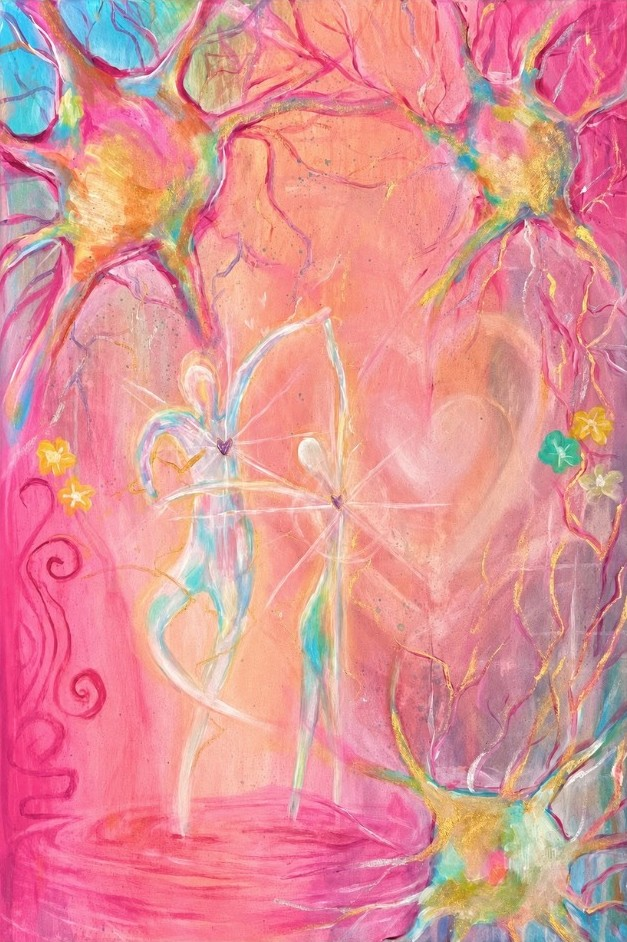
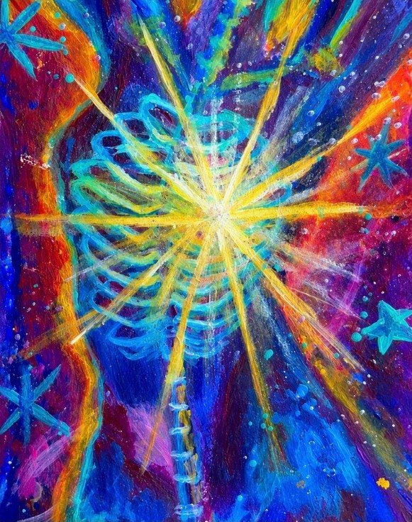
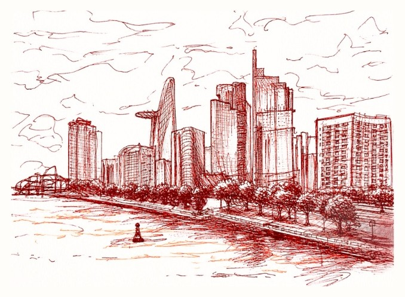

Katherine Trieu · Grade 12 · Ho Chi Minh City
Hi, I’m Gia Hân.
I run art workshops for children in shelters, research how people open up, and build tools and events around one question: what makes it easier for people to take part?
Scroll
Inside, the light is different. Give it a second.
00Who I am
Before the first room
I am in Grade 12 at Trưng Vương High School in Ho Chi Minh City, and I work in Vietnamese and English. I have been drawing since I was five, and I have been class president for eleven years in a row.
On the page and in the classroom, I kept noticing the same thing: some people lean in, and some stay near the edge. I wanted to know what changes that.
Inside · where it started, what I read, what I make, and my CV
Read more about meTriệu Ngọc Gia HânKatherine Trieu
- School
- Trưng Vương High School · Grade 12
- City
- Ho Chi Minh City
- Languages
- Vietnamese, English
- Drawing
- since age five
- At school
- class president, eleven years in a row
The questionWhat makes it easier for people to take part?
01Notice
A tray in the middle
In my first Nét Mơ sessions, every child had their own box of crayons. They drew carefully, but mostly alone. The next time, we placed one tray in the middle. Soon hands were crossing the table, and children were deciding together which green belonged to the grass.
The activity had barely changed, but the room had. I began redesigning the small things: story worlds instead of “draw whatever you want”, tables rearranged, questions that asked less, too soon.
50 workshops · 6 shelters · 2 care facilities
Inside · the sessions, what changed, what it led to
Read the Nét Mơ storyTry it · the same fifteen minutes, two ways
Sustained engagement
60%What the room does
Children work in parallel. Materials stay where they were placed. Most talk goes to the facilitator.
02Study
Testing what I thought I knew
I designed a study with 68 young adults. Each completed two sessions: one working with art materials, one reflecting in a dialogue with AI.
Neither method won. What helped depended partly on how familiar someone already was with art. For some, making something with their hands was an easier place to begin. For others, conversation was.
Inside · the design, the crossover, the seven, three internships
See the method and findingsThe lines cross: neither door won. It depends on who walks in.
03Make
Keeping the days we missed
Our team lived in different cities and countries, so someone always missed the day: the photograph taken while packing supplies, the voice note on the way home.
I co-founded The Colorful Journey, a shared diary where members leave writing, photographs and voice notes on one timeline. More than 550 people visited, and over 450 came back.
Inside · the design problem, the decisions, and Contextuary
Explore The Colorful JourneyThe Colorful JourneyShared diary · co-founder · product and UX/UI
04Gather
Making room at a larger scale
At Beats of Hope, more than ten student bands played for over 300 people and raised 25 million VND for hospital programming. I also worked on a football league, a water-rocket competition and a science festival.
What I watched for was the moment an event began to belong to the people inside it: when one person moved closer to the stage, and others followed.
Inside · Beats of Hope and the other events
See the eventsCharity concert · 2025
Beats of Hope
Admit one · stand closer to the stage
10+ bands
300+ attendees
25M VND raised
05Draw
Where I began
Long before I knew how to study any of these questions, I drew. I have been drawing since I was five. My paintings return to perception, memory and emotion, and many of them helped me notice a question before I could name it.

Chemistry Acrylic on canvas, 2026
Stardust Acrylic on watercolor paper, 2026
Ba Son’s view Red ink on paper, 2025
Inside · eight works, their statements, and films
Enter the exhibition06The question
The question I am still following
When I look across a shelter dining hall, a research session, a shared timeline and a concert floor, I do not see unrelated activities. I see different versions of the same thing I am still trying to understand.
- A shelter dining hall01 Notice
- A research session02 Study
- A shared timeline03 Make
- A concert floor04 Gather
Why does one person lean in while another stays near the edge? What makes an experience begin to feel like theirs too? How much can change when we move one tray, rewrite one prompt or give a memory somewhere to return?
+More work
Other questions I have followed
-
Contextuary
A vocabulary tool that explains a word inside the sentence that gives it meaning.
1,200 visitors · 400+ registered users
View Contextuary → -
TeenCare
How to strengthen mental fitness the way we strengthen our physical fitness.
R&D intern · 56 in-depth interviews
Read more → -
Little Smile Project
Hospital programming and creative direction across three hospitals in Ho Chi Minh City.
3 hospitals
Read more → -
Awards
International Psychology Olympiad, Silver Award, 1st in Asia. RAIS Essay Competition, Top 2 of about 450.
8 honours, 2023 to 2026
See all awards →